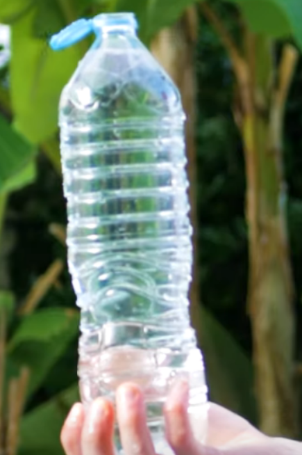

As políticas de descarte de lixo na França mostram um grande compromisso com o meio ambiente, algo que, infelizmente, ainda não vemos plenamente no Brasil. Lá na França, há sistemas bem estabelecidos para a coleta seletiva e reciclagem, abrangendo diversos tipos de materiais. No meu ponto de vista, foi percebido em minha casa, o lixo separado. Com uma sacolinha para plásticos, metais, e entre outros, enfim, recicláveis em geral.
Além disso, há uma forte cultura de conscientização sobre a importância de separar corretamente os resíduos, o que ajuda a reduzir o impacto ambiental e promover a economia circular.
No Brasil, por outro lado, ainda enfrentamos muitos desafios nessa área. A falta de infraestrutura adequada para a coleta seletiva e reciclagem é evidente, resultando em um grande volume de lixo sendo descartado de forma inadequada em áreas urbanas e rurais. Além disso, muitas vezes falta conscientização sobre a importância de práticas mais sustentáveis.
Na França, algumas iniciativas, como a proibição de sacolas plásticas em lojas e a implementação de sistemas de retorno para garrafas, são exemplos inspiradores de como é possível reduzir o desperdício e promover a reciclagem. Essas medidas não apenas ajudam o meio ambiente, mas também incentivam as pessoas a repensarem seus hábitos de consumo, o que me leva ao próximo assunto.
Sobre o descarte de lixo
Em minha vivência na pequena cidade de Toul, foram vistos várias coisas referente ao descarte de lixo. Algumas nacionais, outras apenas regionais.
Um grande exemplo que consigo lembrar, eram as coletas de lixo na frente do colégio. Não as coletas em si, mas algumas técnicas. Por exemplo, na imagem ao lado.
Nelas, podemos ver exemplo de latas de lixo especiais. Existem cerca de 5 em volta umas das outras, cada uma com seu próprio descarte. Os cidadãos são informados para levarem seus lixos nessas coletas, para o descarte correto.
Diferente do Brasil, onde em muitas áreas, a coleta seletiva é inexistente ou inadequada,
levando a um descarte irregular e à falta de reciclagem efetiva.
As latas de lixo comuns muitas vezes não são suficientes para a quantidade e
variedade de resíduos produzidos, resultando em lixo espalhado pelas ruas e áreas
públicas. Além disso, a falta de conscientização e educação ambiental
contribui para a perpetuação desse problema. Em vez de sistemas organizados e
eficientes como os que observei na França, o cenário brasileiro mostra uma
necessidade de investimentos em infraestrutura e políticas públicas voltadas
para o descarte adequado de resíduos.
O que foi feito para incentivos?
Foram feitos vários incentivos para que o descarte de lixos seja correto, desde as influências mais aceitas até as menos aceitas, porém, foram feitas. Assim que o grupo de brasileiros chegou na frança, percebemos rapidamente grandes diferenças.

Envolvendo o contexto do projeto, um intercambista pediu água no aeroporto, e na
hora de abrir, a tampa era lacrada à garrafa (imagem para referência). Algo que a partir de 5 de junho de 2019, começou a ser obrigatório, até 2024.
Algo simples, porém muito eficiente.
Enfim, nem pensamos muito nisso na hora, porém isso é algo fácil que consegue ser muito
eficiente na hora do descarte.
Além disso, como disso antes, sobre o lixo, não apenas as pessoas são obrigatórias a
separar seus lixos, com lixeiras separadas e outros. Nem mesmo as empresas ficam de fora
da contribuição.
Várias empresas de fast-food tiveram que trocar seus métodos também. Por exemplo,
uma certa empresa de fast-food, no Brasil, entrega suas comidas em copos e recipientes em geral, de plástico.
Lá, não mais. Várias coisas são devolvidas à cozinha, para que não sejam jogados fora.
Basicamente, por mais que nem tudo seja flores, a ecologia ainda é algo extremamente incentivado.
Abaixo, respectivamente, estão os slides da apresentação do dia 15/04, e o relato.
Relato gravado: